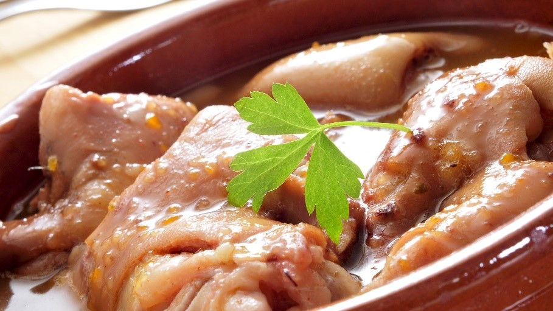

CHƯƠNG 2: MÓN TẾT
1. BÁNH TÉT LÁ CẨM
Là một loại bánh truyền thống nổi tiếng của người miền Tây, “Bánh Tét Lá Cẩm” được dùng chủ yếu trong các dịp lễ tết quan trọng bởi màu sắc đẹp, trang nhã, thích hợp cho những lời chúc phúc, cầu may đầu năm.
Chuẩn bị: 8 tiếng
Thực hiện: 5 tiếng
Thành phẩm: 2 đòn bánh
Nguyên Liệu
• 250g đậu xanh
• 250g thịt ba rọi, rửa sạch, xắt sợi như ngón tay cái
• 10 cái lòng đỏ trứng muối, cắt làm 4
• 500g lá cẩm
• 500g dừa nạo
• Lá chuối hột, dây lát, muối, hạt nêm, đường, nước hành tỏi, hành lá
• 1kg nếp ngỗng
Cách nấu
• Nấu lá cẩm lọc lấy 1 chén nước cốt. Ngâm nếp 6 giờ với nước lá cẩm, vớt để ráo. Dừa nhồi vắt lấy 1 chén nước cốt, 2 chén nước dảo. Cho nước dảo và nếp vào xào liên tục với lửa nhỏ, nêm 2 thìa cà phê muối, 1 thìa súp đường, rót từ từ nước cốt dừa vào đến khi nếp chín 80%, để nguội chia 5 phần.
• Đậu xanh ngâm nở nấu với nước dảo dừa và 1 thìa cà phê muối, đánh nhuyễn. Phi thơm hành lá, cho đậu xanh vào xào ráo, tắt bếp để nguội, chia 5 phần. Thịt ướp với 1 thìa súp đường, 1 thìa cà phê hạt nêm, 1 thìa súp nước hành tỏi, để 3-4 giờ. Lấy đậu xanh bọc thịt và lòng đỏ trứng muối cho kín thành hình trụ.
• Xé lá chuối 30cm, lá dọc ở ngoài, bề láng quay ra, lá ngang ở trong. Trải mỏng nếp ra giữa lá, đặt nhân vào theo chiều dọc, gấp mí lá vào, cuộn tròn, gấp hai đầu lá tạo hình vuông. Dùng hai miếng lá chuối đặt góc vuông. Túm đầu đòn bánh lại, cột dây lát ở giữa và dọc theo đòn bánh, chia thành khoảng đều nhau, dùng dây lát cột vòng quanh, siết chặt.
• Lót lá chuối xuống đáy nồi, đổ 2/3 nước vào cùng lá dứa, đun sôi, thả bánh vào nấu khoảng 5 tiếng cho chín.
2. BÁNH CHƯNG NHÂN HẢI SẢN
Nhắc tới Tết không thể thiếu bánh chưng, món ăn truyền thống và được yêu thích của nhiều người. Thay vì nhân thịt heo đỗ xanh như truyền thống, cùng thay đổi khẩu vị khi gói bằng các loại hải sản, tạo nên hương vị mới, thú vị khi thưởng thức.
Chuẩn bị: 5 tiếng
Thực hiện: 10 tiếng
Thành phẩm: 2 bánh 20cmx20cm
Nguyên Liệu
• 1kg nếp bắc hay nếp ngỗng
• 500g đậu xanh đãi sạch vỏ
• 200g tôm
• 100g mực khô
• 100g sò điệp khô
• 200g thịt ba chỉ
• 1 thìa súp hạt nêm, 2 thìa cà phê tiêu, 1 thìa cà phê đường, 3 thìa súp dầu ăn
• 1 thìa súp hành băm, 8 lá dong lớn, 10 lá dong nhỏ, 12 dây lạt tre, 1 khuôn bánh chưng 20cmx20cm
Cách nấu
• Nếp vo sạch, ngâm khoảng 4 tiếng, vớt ra để thật ráo rồi trộn với 1 thìa cà phê muối. Đậu xanh rửa sạch, ngâm khoảng 1 tiếng, hấp chín, xay nhuyễn. Trộn đậu với hạt nêm, tiêu, vắt miếng, ép dẹp thành hình vuông.
• Thịt heo quay cắt miếng dài
• Lá dong lau sạch, tước bỏ sống lá, cắt bỏ gốc lá và đầu lá, gấp đôi theo chiều dọc, sau đó gấp đôi theo chiều ngang. Xếp 2 sợi lạt thành hình chữ thập, cho khuôn lên. Đặt lá vào 1 bên cạnh khuôn, mở lá ra theo chiều dọc, cho mép lá kia sát cạnh khuôn cùng bên để tạo góc vuông, Phần mép lá nằm phía dưới thì bẻ mép 2 cạnh lá lại, tạo thành hình tam giác dưới đáy. Dùng 1 lá khác lặp lại như vậy với góc đối diện, thêm 2 lá cho vào hai góc còn lại (không bẻ mép lá thành hình tam giác mà mở ra để tạo thành đáy). Lót thêm 1 lá vào khuôn, cho nếp, đậu, thịt quay lên lá, trên cùng là lớp nếp, sau đó dùng 1 lá đậy lên. Xếp các mép lá thừa lại cho gọn, xếp 2 bên rồi xếp lại lần nữa. Lấy khuôn ra khỏi bánh, cột 3 lạt ngang, 3 lạt dọc.
• Lót lá chuối xuống đáy nồi, đổ 2/3 nước vào nồi cùng lá dứa, đun sôi rồi thả bánh vào nấu khoảng 5 tiếng là bánh chín.
• Lót cọng lá dong vào đáy nồi. Xếp bánh chưng vào, đổ ngập nước. Đun lửa lớn cho đến khi sôi sau đó để lửa trung bình.
• Canh châm nước luôn ngập bánh, luộc khoảng 10 tiếng là chín.
• Vớt bánh ra, rửa bằng nước lạnh cho sạch, dùng vật nặng đè lên bánh khoảng 2 tiếng, treo vào nơi thoáng mát.
3. GIÒ GÀ
Được biến tấu từ món giò heo, rất nhiều nguyên liệu như bò, gà được dùng làm giò ngày Tết. Nhiều người thích gói giò gà vì không cần quá cầu kỳ, tỉ mẩn mà ngày xuân vẫn có khúc giò ngon đãi khách.
Chuẩn bị: 1 tiếng
Thực hiện: 45 phút
Thành phẩm: 1 cây
Nguyên Liệu
• 1kg ức gà
• 500g giò sống
• 2 thìa súp Nước mắm chấm Knorr
• 2 thìa súp Hạt nêm Knorr
• 1 thìa súp tiêu hạt
Cách nấu
• Ức gà rửa sạch, dùng khăn sạch thấm thật ráo nước. Lấy 800g cho vào cối xay nhỏ (hoặc băm nhuyễn), 200g còn lại thái lát.
• Cho gà xay nhỏ vào cối, dùng chày quết đều, khi quết thường xuyên nhúng chày vào nước mắm. Cho tiếp giò lụa, Hạt nêm Knorr, và tiêu sọ vào, quết đều cho hỗn hợp thật dai. Sau cùng cho ức gà thái lát vào trộn đều.
• Lấy bọc nilon cột phần đáy, cho hỗn hợp giò đã quết vào, buộc chặt đầu bao lại. Cho vào nồi hấp cách thủy khoảng 45 phút là được.
• Vớt ra để nguội, cho vào tủ lạnh dùng dần.
4. TÔM KHO TRỨNG CÚT
Tôm là loại hải sản sẵn có ở tất cả các khu chợ từ thành thị tới nông thôn, món “Tôm Kho Trứng Cút” cũng vì vậy mà được nhiều người yêu thích. Mâm cơm ngày Tết thêm món tôm kho thì còn gì thú vị hơn.
Chuẩn bị: 20 phút
Thực hiện: 30 phút
Khẩu phần: 4 người
Nguyên Liệu
• 1kg tôm sú (loại lớn)
• 30 quả trứng cút
• 2 trái dừa xiêm
• 4 thìa súp đường
• 2 thìa súp nước mắm
• 2 thìa súp Nước mắm chấm Knorr
• 1/2 thìa súp Hạt nêm Knorr
• 1 thìa súp tỏi băm, 4 thìa súp dầu ăn
Cách nấu
• Tôm sú rửa sạch, cắt râu và chân, bóc vỏ. Trứng cút luộc chín, ngâm nước lạnh, bóc vỏ.
• Phi thơm hành tím, tỏi băm với dầu ăn, thả tôm vào chiên chin 2 mặt. Cho nước dùng và trứng cút vào nấu sôi, nêm Hạt nêm Knorr, đường, nước mắm, muối vào vừa ăn. Nấu đến khi nước sánh trong là được.
• Cho tôm kho trứng cút vào tủ mát, khi ăn múc lượng vừa đủ hâm nóng lại. Dùng kèm với rau cần muối chua rất ngon.
5. BÒ THƯNG
Những dịp lễ, Tết đặc biệt, ngoài các món ăn quen thuộc như nem, chạo, chả… người dân miền Trung còn sáng tạo ra món “Bò Thưng” lạ miệng, đậm đà, quyến rũ biết bao người mê ẩm thực.
Chuẩn bị: 15 phút
Thực hiện: 25 phút
Khẩu phần: 4 người
Nguyên Liệu
• 500g thịt thăn bò
• 200g mỡ gáy
• 200g đậu phộng rang
• 1 thìa súp Nước mắm chấm Knorr
• 1 thìa súp Hạt nêm Knorr
• 1 thìa súp đường
• 2 trái dừa xiêm
• 1 thìa súp hành tím và tỏi băm
• 4 thìa súp dầu ăn
• Dây chỉ cột thịt
Cách nấu
• Đậu phộng rang đập giập, chia làm 2, một phần để cho vào nồi thưng, một phần để rắc lên đĩa trước khi ăn.
• Thịt bò cắt miếng dày, đập giập thật mềm.
• Mỡ gáy cắt sợi dài bằng miếng bò, cho đường vào ướp cứng trong.
• Cho mỡ gáy vào thịt bò cuộn tròn lại, dùng dây quấn chặt lại.
• Phi thơm tỏi và hành tím, cho bò cuộn vào chiên vừa chín. Cho nước dừa vào nấu sôi, nêm Nước mắm chấm Knorr, Hạt nêm Knorr, đường và đậu phộng đập giập vào thưng đến khi cuốn bò mềm là được.
• Để thịt nguội, thái miếng mỏng, rắc đậu phộng, chan nước xốt lên trên dùng kèm với khế, chuối chát và bánh mì rất ngon.
6. GIÒ LỤA CUỘN THỊT XÔNG KHÓI
Từ những nguyên liệu được làm sẵn trước như giò lụa, thịt xông khói... chị em nội trợ có thể vận dụng một chút khéo léo của mình để chế biến thêm nhiều món ăn mới lạ, mang đến cho cả nhà những bữa cơm hấp dẫn.
Chuẩn bị: 5 phút
Thực hiện: 15 phút
Khẩu phần: 4 người

Nguyên Liệu
• 1 gói thịt xông khói
• 200g giò lụa
• 3 thìa cà phê Hạt nêm Knorr
• 1 thìa cà phê đường
• 20g bơ lạt
• 2 thìa súp tỏi băm
Cách nấu
• Thịt xông khói cắt miếng dài 6cm. Giò lụa cắt khối dài 3cm, dày khoảng 1cm. Trải thịt ra thớt, đặt miếng giò lụa lên cuộn lại, dùng tăm xiên qua cho khỏi bung.
• Làm tan bơ, cho tỏi băm vào phi thơm. Bật lửa lớn, cho giò lụa cuộn thịt ba rọi xông khói vào xóc, nêm đường, Hạt nêm Knorr vừa ăn, xóc lần nữa cho đều rồi tắt bếp.
• Bày ra đĩa, trang trí xà lách và dưa kiệu để ăn kèm. Chấm tương ớt rất ngon.
7. CANH BÓNG NẤU THẢ
Là món ăn truyền thống, có trong mâm cỗ cúng gia tiên ngày Tết. Món ăn thanh mát, cần chế biến tỉ mỉ cầu kì; và được gọi là “Canh bóng” vì thành phần quan trọng nhất là bóng làm từ bì heo, nướng lên cho nở phồng, thả trên bát canh trông như những chiếc bong bóng. Canh này thường dùng các loại rau như cà rốt, xu hào, nấm...
Chuẩn bị: 20 phút
Thực hiện: 30 phút
Khẩu phần: 4 người
Nguyên Liệu
• 1 miếng bóng bì lớn
• 200g giò sống
• 100g tôm bóc vỏ, bỏ chỉ lưng, cắt hạt lựu
• 100g mực rửa sạch, cắt hạt lựu
• 5 tai nấm mèo
• 20 tai nấm hương
• 1 củ cà rốt nhỏ
• 1 củ su hào
• 10 cọng hành lá
• 10g rau răm
Cách nấu
• Bóng bì ngâm nước mềm, vớt để ráo, cắt miếng vuông 10x10cm.
• Tôm bóc vỏ, bỏ chỉ lưng, mực rửa sạch. Tất cả cắt hạt lựu.
• Nấm mèo ngâm nước, cắt bỏ chân, rửa sạch, thái sợi mỏng.
• Nấm hương ngâm mềm, cắt bỏ cuống, rửa sạch. Cà rốt gọt vỏ, tỉa hoa và xắt hạt lựu. Su hào gọt vỏ, rửa sạch, tỉa hoa. Hành lá, rau răm, rửa sạch, cắt nhỏ. Đầu hành lá băm nhỏ.
• Cho giò sống, tôm, mực, nấm mèo, cà rốt, đầu hành và 1 thìa súp Nước mắm chấm Knorr vào trộn đều. Trải miếng bóng ra thớt, dùng thìa trét hỗn hợp đã trộn lên, cuộn tròn, hấp chín, cắt lát vừa ăn.
• Nấu nước sôi, nêm hạt nêm, nước mắm vừa ăn, cho cà rốt, su hào và nấm hương vào nấu khoảng 20 phút. Cho tiếp bóng bì cuộn thái lát vào nấu trên lửa nhỏ khoảng 10 phút là được.
• Múc ra tô, rắc hành lá, rau răm, tiêu và ít nước mắm sống lên trên. Dùng như món súp hay dùng kèm với cơm nóng đều ngon.
8. BÓNG XÀO THẬP CẨM
Món ăn không chỉ thể hiện được sự khéo léo của người nấu mà còn cuốn hút người ăn nhờ màu sắc rực rỡ, tươi sáng và mùi vị rất đặc biệt. Cái sần sật của da heo, vị bùi bùi từ tôm, mực càng thú vị hơn khi được kết hợp cùng nhiều loại rau, củ đi kèm.
Chuẩn bị: 20 phút
Thực hiện: 20 phút
Khẩu phần: 4 người
Nguyên Liệu
• 100g bóng heo
• 50g tim heo
• 50g mực
• 50g tôm
• 50g thịt nạc
• 50g bông cải
• 1/4 củ cà rốt
• 50g đậu que
• 1/2 củ hành tây
• 1 nhánh gừng
• 1 thìa súp hành tỏi băm, 1 thìa cà phê muối, 1 thìa súp Hạt nêm Knorr, 1/2 thìa súp đường, 2 thìa súp dầu ăn
Cách nấu
• Da heo ngâm nước cho mềm, bóp với nước pha gừng và rượu cho hết mùi, xả sạch, vắt khô, tháí miếng vuông.
• Tim heo rửa sạch, thái lát mỏng. Mực làm sạch, khía hoa, thái miếng vừa ăn. Tôm lột vỏ, rửa sạch, để ráo.
• Bông cải tách bông nhỏ. Cà rốt bào vỏ, tỉa hoa, thái mỏng. Đậu que tước xơ, thái khúc. Gừng cạo vỏ, đập giập, cho vào nước nấu sôi, nêm ít muối, hạt nêm, cho bông cải, cà rốt, đậu que vào trụng sơ, vớt ra để ráo, ngâm nước đá lạnh cho giòn. Cho tiếp mực vào nước luộc, trụng sơ, xả lại nước lạnh.
• Làm nóng dầu ăn, phi vàng 1/2 hành tỏi băm, cho tim heo vào xào chín, nêm ít hạt nêm, trút ra đĩa. Dùng lại chảo, thêm dầu ăn vào, cho mực, tôm vào xào chín, nêm hạt nêm vừa ăn.
• Phi thơm 1/2 hành tím băm còn lại với dầu ăn trên chảo khác, cho bông cải, cà rốt, đậu que vào xào nhanh tay, nêm đường, hạt nêm vừa ăn. Khi rau củ vừa chín tới cho tim, mực, tôm, bóng heo vào đảo đều, nêm lại vừa ăn. Xào chín tắt bếp, rắc tiêu lên.
9. THỊT ĐÔNG
Đi kèm với đĩa cải chua, dưa hành, củ kiệu ngày Tết của người Việt thường là món “Thịt đông” rất đặc biệt và ngon miệng. Nhờ cái lạnh của khí trời những ngày vào đông, mà đĩa thịt đông càng trở nên hấp dẫn và lôi cuốn người thưởng thức hơn.
Chuẩn bị: 20 phút
Thực hiện: 60 phút
Khẩu phần: 4 người

Nguyên Liệu
• 1kg chân giò heo rút xương
• 300g thịt đầu heo
• 50g nấm mèo
• 1 thìa cà phê tiêu đập giập
• 2 thìa cà phê Hạt nêm Knorr
• 1 thìa cà phê đường, 2 thìa súp Nước mắm chấm Knorr, 2 lít nước
Cách nấu
• Chân giò, thịt đầu cạo lông, cho vào nước muối rửa sạch, để ráo, cắt miếng dày khoảng 1cm. Nấm mèo ngâm nở, cắt bỏ chân, thái sợi to.
• Nấu nước vừa nổi bọt lăn tăn, nêm Nước mắm chấm Knorr, Hạt nêm Knorr, đường, tiêu (nêm đậm hơn luộc nhưng nhạt hơn kho) rồi cho thịt vào nồi.
• Nấu đến khi thịt mềm và nước sánh lại là được. Cho nấm mèo vào, tắt bếp.
• Múc thịt vào bát hoặc vào hộp nhựa tròn. Chờ thịt đông lại cho vào tủ mát dùng dần. Ăn kèm với dưa cần hoặc cải chua, chấm nước mắm sống pha ớt rất ngon.
10. THỊT BÒ VIÊN XÀO NẤM KIM CHÂM
Ngoài thành phần protid như mọi loại nấm khác, nấm kim châm còn có vitamin B1, B2, C, BB... chứa kẽm, kali, tốt cho người mắc bệnh huyết áp; đồng thời có tác dụng phòng chống bệnh gan mật, tiêu hóa. Nấm kim châm chế biến đơn giản, lại có thể phối hợp với nhiều loại thực phẩm như xào với mực, tôm, thịt, thịt gà, thịt bò... Bạn có thể thử chế biến “Thịt Bò Viên Xào Với Nấm Kim Châm”, một món dễ làm, không tốn thời gian.
Chuẩn bị: 15 phút
Thực hiện: 15 phút
Khẩu phần: 4 người
Nguyên Liệu
• 200g thịt bò
• 150g nấm kim châm
• 100g cà rốt
• 50g củ năng
• 10g tỏi băm
• 2 thìa cà phê Hạt nêm Knorr, 1 thìa súp dầu ăn
Cách nấu
• Thịt bò rửa sạch, băm nhuyễn, cho 1 thìa cà phê Hạt nêm Knorr vào trộn đều, để thấm.
• Vo thịt thành viên tròn.
• Nấm kim châm cắt bỏ gốc, rửa sạch, để ráo. Cà rốt, củ năng gọt vỏ, rửa sạch. Cà rốt thái sợi, củ năng thái đôi.
• Làm nóng 1 thìa súp dầu ăn, cho tỏi vào phi thơm, cho thịt bò vào đảo nhẹ tay cho chín. Cho tiếp cà rốt và củ năng vào xào trước, sau đó cho nấm kim châm vào, nêm Hạt nêm Knorr vừa ăn, xào nhanh khoảng 5 phút nữa là được.
11. ĐỌT BÍ XÀO THỊT BÒ CHAY
“Thịt bò chay xào đọt bí” là món ngon hấp dẫn phù hợp với những ngày thời tiết se lạnh. Món ăn được chế biến dễ dàng lại rất nhanh. Vậy tại sao lại không trổ tài cho mọi người cùng thưởng thức nhỉ?
Thực hiện: 15 phút
Khẩu phần: 2 người
Nguyên Liệu
• 10 miếng thịt bò chay
• 2 tép tỏi
• 2 thìa cà phê nước mắm chay
• 2 thìa cà phê Hạt nêm Knorr từ Nấm và Rong Biển, 1 thìa súp dầu ăn
Cách nấu
• Thịt bò chay ngâm với nước để mềm, vắt khô, cắt miếng vừa ăn.
• Đọt bí tước bỏ phần vỏ bên ngoài, rửa sạch, để ráo nước. Tỏi đập giập, băm nhỏ.
• Làm nóng chảo, cho dầu ăn vào phi thơm tỏi, cho đọt bí vào xào. Khi rau gần chín, cho thịt bò chay vào xào chung. Nêm nếm nước mắm chay, Hạt nêm Knorr từ Nấm và Rong Biển cho vừa ăn.
• Cho rau xào ra dĩa ăn với cơm trắng.
12. CÁ HÚ KHO RIỀNG
Cá hú có thịt ngon, tuy giữ vị trí khiêm tốn sau hai loài cá tra và cá basa, nhưng vẫn mang một hương vị rất hấp dẫn trong món ăn hàng ngày. Cá hú tươi kho với riềng sẽ làm bữa cơm nhà bạn thêm bổ dưỡng.
Chuẩn bị: 20 phút
Thực hiện: 30 phút
Khẩu phần: 4 người

Nguyên Liệu
• 300g cá hú
• 100g thịt ba chỉ
• 1/2 củ riềng tươi
• 1/2 thìa súp nước màu dừa
• 2 trái ớt
• 1 thìa súp dầu ăn
• Ớt xay
• 1 gói Knorr Gia Vị Hoàn Chỉnh - Cá Kho Riềng
• Gia vị: Hạt nêm Knorr, muối, dầu ăn
Cách nấu
• Cá hú rửa sạch, cắt khoanh, ướp cá với nước màu dừa, 1 gói Knorr Gia Vị Hoàn Chỉnh
• Cá Kho Riềng, để thấm 15 phút.
• Thịt rửa sạch, xắt miếng mỏng. Riềng xắt sợi. Ớt xắt lát.
• Làm nóng dầu ăn, cho thịt vào xào săn, cho cá đã ướp vào, nhẹ tay trở mặt cá, cho riềng và ớt vào, thêm ít nước lọc cho xăm xắp mặt cá, kho lửa nhỏ cho cá ngấm gia vị, khi thấy nước sệt lại là được.
13. GIÒ LỢN NINH SẢ TỎI
Với những phụ nữ Việt, món chân giò ninh luôn có trong thực đơn ngày Tết. Hương thơm nồng của sả gia giảm thật khéo với vị đậm đà của thịt heo, giúp món ăn ngon mà không ngấy, thuyết phục những thực khách khó tính nhất.
Chuẩn bị: 15 phút
Thực hiện: 45 phút
Khẩu phần: 4 người
Nguyên Liệu
• 1 cái chân giò lợn
• 100g tỏi củ
• 10 cây sả
• 1 thìa súp tiêu hạt
• 2 trái dừa
• 2 thìa cà phê Hạt nêm Knorr từ Thịt Thăn, Xương Ống và Tủy
• 1 thìa súp Nước mắm chấm Knorr
• 2 thìa cà phê đường
Cách nấu
• Chân giò cạo sạch lông, rửa sạch bằng nước muối, chặt miếng vừa ăn.
• Tỏi để nguyên vỏ, rửa sạch. Sả bóc vỏ già, rửa sạch chẻ làm đôi, cắt khúc vừa ăn.
• Cho sả và tỏi vào nồi cùng với chân giò, bắc lên bếp tao cho thịt săn lại, cho nước dừa vào hầm, nêm Hạt nêm Knorr từ Thịt Thăn, Xương Ống và Tủy, Nước mắm chấm Knorr, muối, đường vừa ăn. Hầm khoảng 45 phút cho chân giò mềm là được.
• Để nguội chia ra từng phần cho vào tủ mát. Khi ăn lấy từng phần ra hâm lại rất ngon.
14. BA RỌI KHO TIÊU
“Ba rọi kho tiêu”,là một món ăn cực kì hấp dẫn với miếng thịt ba rọi mềm, có màu cánh gián đẹp, thơm thơm mùi hạt tiêu. Món này sẽ mang đến một bữa ăn rất ấm cúng và ngon miệng khi dùng với cơm nóng trong mùa lạnh.
Chuẩn bị: 15 phút
Thực hiện: 15 phút
Khẩu phần: 4 người
Nguyên Liệu
• 300g thịt ba rọi, ít mỡ, cắt que
• 3 tép tỏi, bằm nhuyễn
• 1/4 trái ớt sừng, cắt miếng mỏng
• 2 nhánh hành lá, cắt khúc vừa ăn
• 1 gói Knorr Gia Vị Hoàn Chỉnh - Thịt Kho
• 1/4 muỗng cà phê tiêu xay
• 2 muỗng canh dầu ăn
• 2/3 chén nước lọc
Cách nấu
• Ướp thịt ba rọi với tỏi bằm và gói Knorr Gia Vị Hoàn Chỉnh
• Thịt Kho, để 15 phút cho thịt thấm gia vị.
• Đun nóng dầu ăn, cho hỗn hợp thịt vào nồi, xào khoảng 5 phút cho thịt săn lại.
• Cho nước lọc vào nồi, giảm lửa nhỏ, kho khoảng 10 phút hoặc đến khi nước sốt sệt lại là được, cho hành lá vào. Múc thịt ra đĩa, thêm chút tiêu xay cho thơm, trang trí với ớt cắt khoanh, dùng nóng với cơm trắng.
15. CÁ KHO RIỀNG
“Cá kho riềng”là sự kết hợp giữa vị mặn, bùi của cá cùng vị béo của thịt, thơm của riềng tạo sẽ tạo nên hương vị riêng biệt của món cá kho thường được nấu ở phía Bắc.
Chuẩn bị: 15 phút
Thực hiện: 25 phút
Khẩu phần: 4 người
Nguyên Liệu
• Cá chép, rửa sạch với nước cốt chanh, cắt khúc
• 200g thịt ba chỉ, rửa sạch, cắt miếng nhỏ vừa ăn
• 1 củ riềng, gọt vỏ, rửa sạch, cắt sợi
• 200ml nước trà xanh
• Tiêu xay, ớt
• Gia vị: 1 gói Knorr Gia Vị Hoàn Chỉnh - Cá Kho Riềng cho món cá kho ngon đúng điệu
Cách nấu
• Dùng gói Knorr Gia Vị Hoàn Chỉnh
• Cá Kho Riềng ướp cá chép trong 15 phút cho ngấm gia vị.
• Sắp vào nồi lần lượt một lớp riềng, một lớp thịt, một lớp cá và một lớp riềng trên cùng. Thêm nước trà xanh vào cho xăm xắp mặt cá.
• Bắc nồi lên bếp, đun to lửa cho nồi cá sôi, sau đó vặn nhỏ lửa kho cá khoảng 45 phút cho cá chín.
• Cho cá ra dĩa, trang trí với ớt, rắc chút tiêu xay. Dùng nóng với cơm.